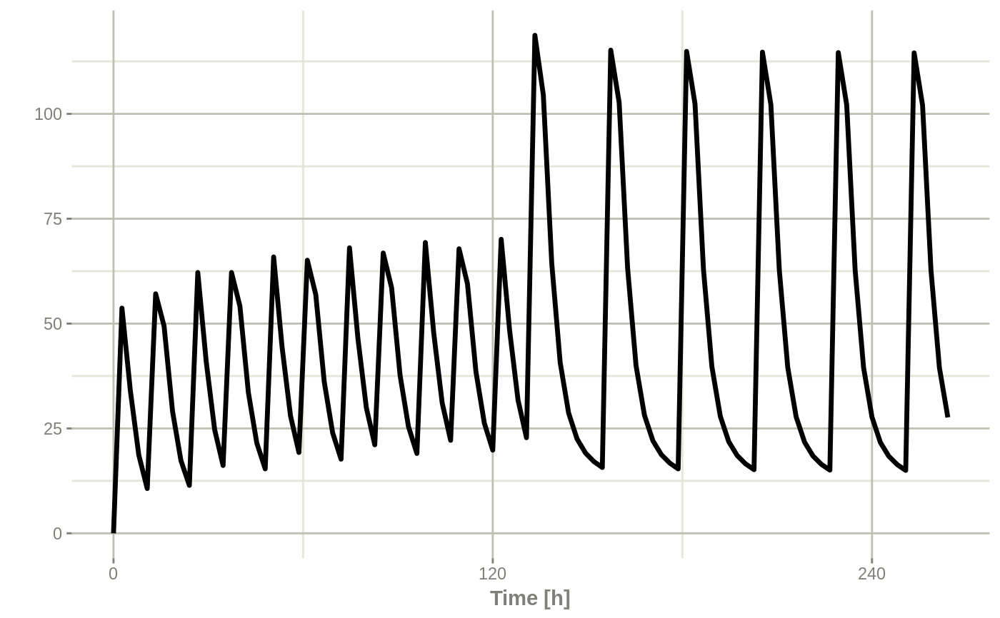
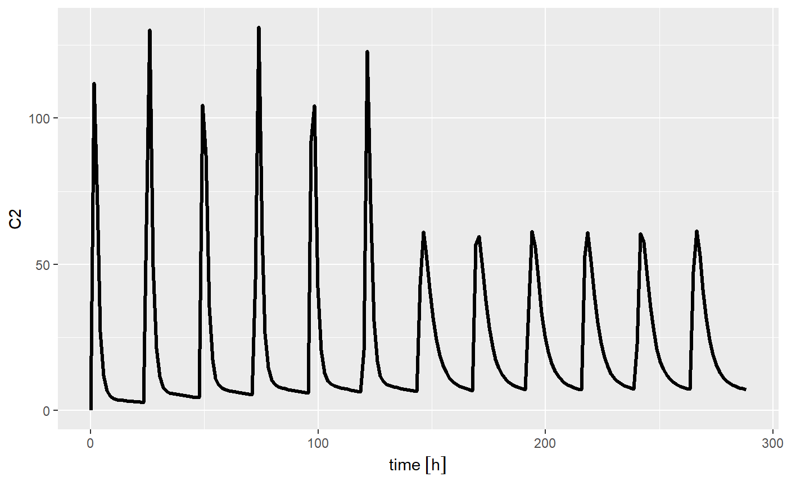
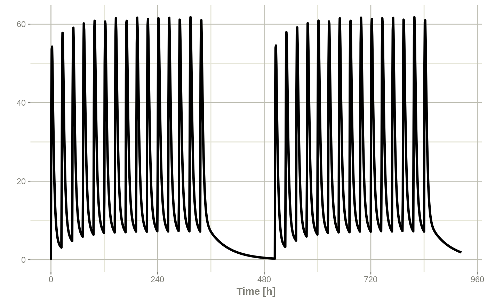

Event Table Function
et.RdEvent Table Function
et(..., envir = parent.frame()) # S3 method for default et(..., time, amt, evid, cmt, ii, addl, ss, rate, dur, until, id, amountUnits, timeUnits, addSampling, envir = parent.frame())
Arguments
| ... | Times or event tables. They can also be one of the named arguments below. |
|---|---|
| envir | the |
| time | Time is the time of the dose or the sampling times. This can also be unspecified and is determined by the object type (list or numeric/integer). |
| amt | Amount of the dose. If specified, this assumes a dosing record, instead of a sampling record. |
| evid | Event ID; This can be:
|
| cmt | Compartment name or number. If a number, this is an integer starting at 1. Negative compartments are not supported (there is no way to turn off a compartment currently). If the compartment is a name, the compartment name is changed to the correct state/compartment number before running the simulation. Can also specify |
| ii | When specifying a dose, this is the inter-dose interval
for |
| addl | The number of additional doses at a inter-dose interval after one dose. |
| ss | Steady state flag; It can be one of:
All other values of |
| rate | When positive, this is the rate of infusion. Otherwise:
When a modeled bioavailability is applied to positive rates
( If instead you want the modeled bioavailability to increase the
rate of infusion instead of the duration of infusion, specify the
|
| dur | Duration of infusion. When |
| until | This is the time until the dosing should end. It can be an easier way to figure out how many additional doses are needed over your sampling period. |
| id | A integer vector of IDs to add or remove from the event table. If the event table is identical for each ID, then you may expand it to include all the IDs in this vector. All the negative IDs in this vector will be removed. |
| amountUnits | The units for the dosing records ( |
| timeUnits | The units for the time records ( |
| addSampling | This is a boolean indicating if a sampling time
should be added at the same time as a dosing time. By default
this is |
Value
A new event table
References
Wang W, Hallow K, James D (2015). "A Tutorial on RxODE: Simulating Differential Equation Pharmacometric Models in R." CPT: Pharmacometrics \& Systems Pharmacology, 5(1), 3-10. ISSN 2163-8306, <URL: http://www.ncbi.nlm.nih.gov/pmc/articles/PMC4728294/>.
See also
eventTable, add.sampling,
add.dosing, et,
etRep, etRbind,
RxODE
Examples
## Model from RxODE tutorial mod1 <-RxODE({ KA=2.94E-01; CL=1.86E+01; V2=4.02E+01; Q=1.05E+01; V3=2.97E+02; Kin=1; Kout=1; EC50=200; C2 = centr/V2; C3 = peri/V3; d/dt(depot) =-KA*depot; d/dt(centr) = KA*depot - CL*C2 - Q*C2 + Q*C3; d/dt(peri) = Q*C2 - Q*C3; d/dt(eff) = Kin - Kout*(1-C2/(EC50+C2))*eff; }); ## These are making the more complex regimens of the RxODE tutorial ## bid for 5 days bid <- et(timeUnits="hr") %>% et(amt=10000,ii=12,until=set_units(5, "days")) ## qd for 5 days qd <- et(timeUnits="hr") %>% et(amt=20000,ii=24,until=set_units(5, "days")) ## bid for 5 days followed by qd for 5 days et <- seq(bid,qd) %>% et(seq(0,11*24,length.out=100)); bidQd <- rxSolve(mod1, et) plot(bidQd, C2)## Now Infusion for 5 days followed by oral for 5 days ## note you can dose to a named compartment instead of using the compartment number infusion <- et(timeUnits = "hr") %>% et(amt=10000, rate=5000, ii=24, until=set_units(5, "days"), cmt="centr") qd <- et(timeUnits = "hr") %>% et(amt=10000, ii=24, until=set_units(5, "days"), cmt="depot") et <- seq(infusion,qd) infusionQd <- rxSolve(mod1, et)#> Warning: Adding observations, for more control use et/add.sampling.## 2wk-on, 1wk-off qd <- et(timeUnits = "hr") %>% et(amt=10000, ii=24, until=set_units(2, "weeks"), cmt="depot") et <- seq(qd, set_units(1,"weeks"), qd) %>% add.sampling(set_units(seq(0, 5.5,by=0.005),weeks)) wkOnOff <- rxSolve(mod1, et) plot(wkOnOff, C2)## You can also repeat the cycle easily with the rep function qd <-et(timeUnits = "hr") %>% et(amt=10000, ii=24, until=set_units(2, "weeks"), cmt="depot") et <- etRep(qd, times=4, wait=set_units(1,"weeks")) %>% add.sampling(set_units(seq(0, 12.5,by=0.005),weeks)) repCycle4 <- rxSolve(mod1, et) plot(repCycle4, C2)